Ingeniería Mecatrónica | Universidad Iberoamericana Puebla
Perfil Profesional
Bienvenido a mi portafolio. Aquí presento una muestra de mis capacidades técnicas, proyectos de ingeniería y bitácoras de desarrollo.
Sobre mí
Tomás Toledo Fernández
Soy estudiante de Ingeniería Mecatrónica en la Universidad Iberoamericana Puebla. Cuento con una sólida formación orientada al desarrollo de soluciones tecnológicas que combinan el diseño mecánico, la electrónica embebida, la programación y la manufactura avanzada.
Áreas de Competencia y Tecnologías:
Programación y Modelado: Desarrollo de software y algoritmos en Python y C/C++ para modelado matemático, operaciones matriciales y sistemas automatizados.
Diseño Mecánico y CAD: Experiencia en el uso de software de diseño avanzado como CATIA V5 e impresión 3D (operación y mantenimiento de equipos como Ender 3 Pro con laminadores como PrusaSlicer y Cura).
Electrónica y Hardware: Trabajo práctico con microcontroladores (módulos ESP32), sensores (IMUs MPU-6050/9250, amplificadores HX711 para celdas de carga), drivers de motores (TB6612FNG) y visión artificial mediante OpenCV (Python).
Simulación y Procesos: Elaboración de modelos de simulación en MATLAB y NI Multisim para optimización de parámetros y validación virtual de circuitos analógicos y digitales.
Mi objetivo profesional es integrarme a proyectos de alta exigencia tecnológica donde pueda aportar capacidad analítica, resolución de problemas complejos y un enfoque práctico en el desarrollo de sistemas mecatrónicos innovadores.
KiCad
Resumen: ¿Qué es KiCad?
KiCad es un paquete de software de código abierto para la automatización del diseño electrónico (EDA). Los programas permiten la captura de esquemas y el diseño de placas de circuito impreso (PCB) con salida en formato Gerber e IPC-2581 . El paquete funciona en Windows, Linux y macOS y está licenciado bajo la licencia GNU GPL v3 .
Fuente: https://www.kicad.org/about/kicad/Menu
Menu principal de KiCad
Al iniciar un proyecto de KiCad podemos observar en la barra lateral de KiCad los editores que tenemos disponibles, como lo es el editor de esquemas, el editor de simbolos o el editor de placas.
Además de eso tambien encontramos los menus usuales de "Archivo" donde podemos encontrar para abrir, guardar o clonar algun documento que tengamos; "Editar"para copiar, pegar o cortar; o "Herramientas" entre otras; como es usual encontrar en cualquier aplicación con creación de archivos.
KidCad FabLib
¿Cómo instalar KidCad FabLib?
Abrimos el menu de Herramientas buscando el "Administrador de Complementos y Contenido" y lo abrimos, lo cual nos abrira un menu.
En dicho menu vamos a buscar en el filtro la libreria de "KidCd FabLib" y la instalamos. Una vez instalada vamos a reiniciar el programa para asegurarnos de poder utilizar esta libreria.
Esquemas
Editor de esquemas
Lo primero que vamos a ocupar es el editor de esquemas el cual podemos abrir desde el menu lateral en el inicio o en la barra de Herramientas en la parte superior.
Una vez abierto nos desplegara la ventana de la anterior imagen, en donde podremos crear, editar y conectar todos nuestros diagramas para realizar un circuito.
HerramientasE
Herramientas del editor de esquemas
En la barra lateral dentro del editor de esquemás podemos observar diversas herramientas las cuales nos pueden ayudar a identificar e insertar los elementos necesarios para nuestro diagrama
Componentes
¿Cómo agregar un componente?
La parte más importante del editor de esquemas es para poder agregar los componentes que deseamos utilizar. Esto lo podemos hacer de dos maneras, utilizando el comando de la tecla "A" o pulsando el icono de "Colocar Simbolos" que vimos en la barra lateral del editor de esquemas en la parte anterior. Esto nos abrira la siguiente ventana:
Una vez abierta esta ventana desde el filtro podremos buscar cualquier componente que deseemos insertar simplemente escribiendolo. Tambien es importante que busquemos insertar los componentes de nuestra libreria que insertamos llamada "PCM_fab"
Tambien es importante que verifiquemos que el compomnente que deseemos insertar tenga un footprint ya determiando, debido a que es probable que no podamos encontrar facilmente los componentes que no posean un footprint, es lo que se ve a continuación.
Placas
Editor de Placas
Por otro lado tenemos tambien el editor de placas el cual, al igual que el editor de esquemas, podemos abrir desde el menu lateral en el inicio o en la barra de Herramientas en la parte superior, pero a su vez tambien podemos ingresar desde el editor de esquemas al pulsar el icono señalado en la siguiente imamgen.
Componentes
¿Cómo importar los componentes del editor de esquemas?
Al ya tener abierta la pestaña del editor de placas vamos a necesitar insertar los componentes del diagrama que ya creamos con anterioridad. Para esto vamos a buscar el icono de "Actualizar placa desde esquema" el cual nos va a abrir otra ventanita en la cual vamos a picar el boton de "Actualizar placa", con lo que ya tendriamos nuestros componentes inserador en esta"
HerramientasP
Herramientas del editor de placas
Una vez que tengamos nuestros componentes en el editor de placas nos vamos a encontrar en la barra lateral derecha diversas herramientas para poder diseñar nuestra placa a nuestro gusto.
Pero tambien es importante que dependiendo de nos requisitos y limitaciones que tengamos ajustemos las reglas de diseño. Parra poder ajustar estar reglas vamos a pulsar un pequeño menu desplegable en la parte superior izquierda para despues de eso pulsar el apartado de "Editar tamaños predefinidos" lo cual nos abrira una ventana en la cual buscaremos "Requerimientos" para poder ajustar como es debido las limitaciones que poseamos.
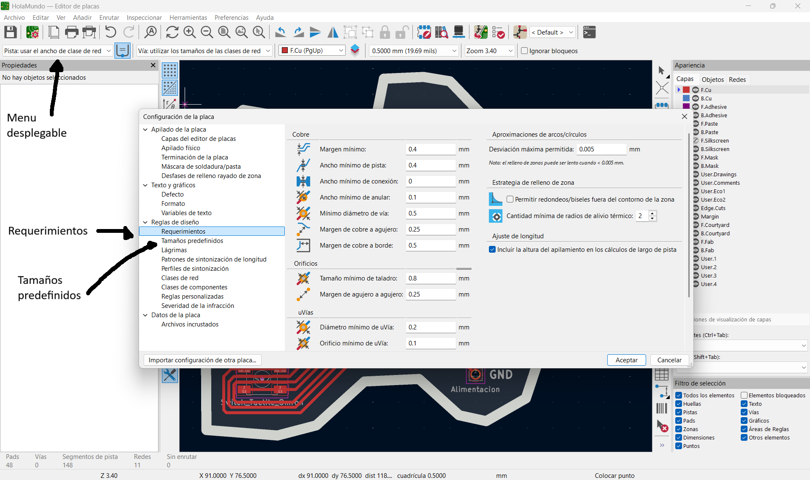
Una vez que hayamos avanzado o en su defecto concluido con nuestro diseño de placa, debemos comprobar que nuestro diseño cumpla con las reglas de diseño. Esto lo haremos desde el apartado de de "Comprobar Reglas de diseño" y posterior mente ejecutando el DRC con lo que se nos indicara si tenemos algun incumplimiento de las reglas mediante errores o avisos.
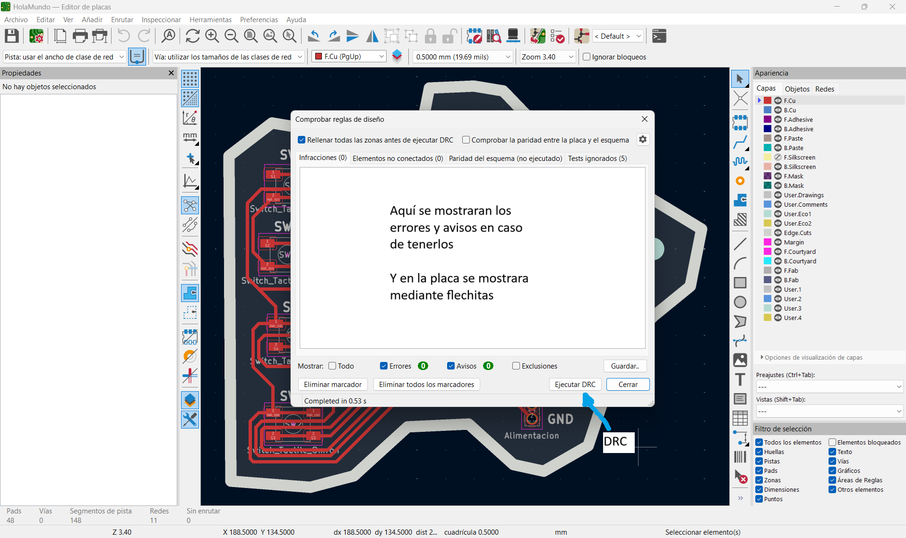
Exportar
¿Cómo exportar los archivos a gerber?
Una vez que nuestro diseño este terminado y no posea ningun error o aviso, lo que queremos es exportar los archivos para poder empezar a fabricar. Esto lo haremos desde "Archivo" y buscando "Salidas de fabricación" se nos desplegara las opciones posibles que tenemos.
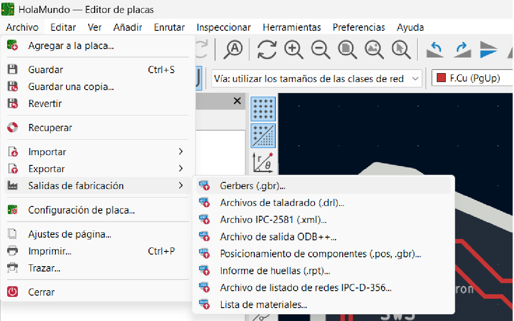
En nuestro caso pulsaremos la opción de "Gerbers" lo cual nos abrira la siguiente ventana. Y en la parte de "Formato de trazado" cambiaremos el formato a un archivo "SVG" lo cual nos cambiara el menu (Al de la segunda imagen).
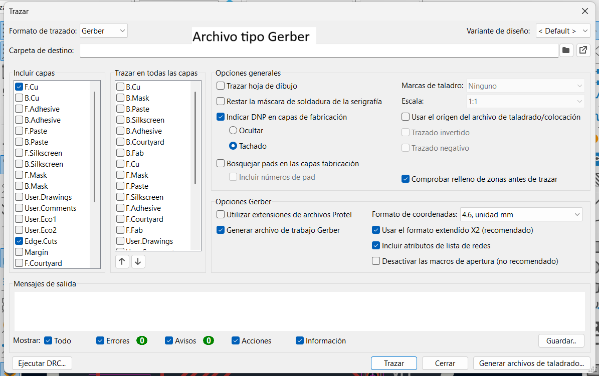
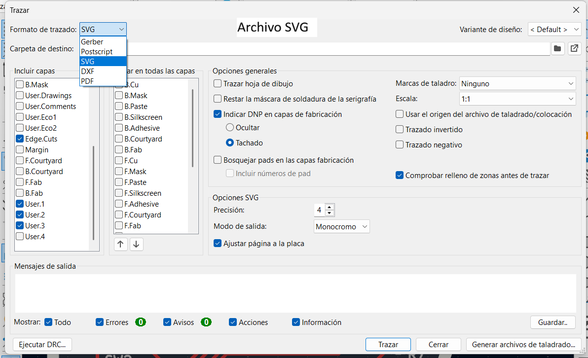
Ya en esta ventana dejaremos incluidas solamente las capas que nosotros ocupamos e incluiremos el apartado de "Ajustar pagina a la placa" para posteriormente pulsar "Trazar" lo cual nos creara los archivos para poder posteriormente configurar nuestros archivos de fabricación. NOTA: si no somos nosotros mismos los que vamos a fabricar las placas, es importante en esa misma ventana pulsar "Guardar" para poder crear un reporte el cual indicara cosas como los componentes, donde va cada uno etc.
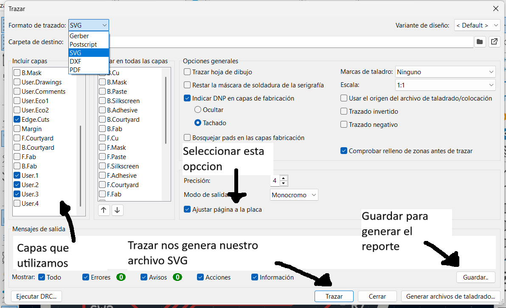
Mods
Resumen: Plataforma Mods CE
Mods CE (Community Edition) es una herramienta web desarrollada para laboratorios de fabricación (FabLabs). Funciona mediante bloques interconectados y nos permite preparar proyectos de corte y grabado, calcular las rutas de las fresas y generar los archivos necesarios para máquinas CNC como la Roland SRM-20 sin complicaciones.
Para comenzar el proceso, abrimos el navegador e ingresamos a la página oficial de Mods Community Edition para cargar la zona de trabajo.
Menú
Página principal y menú Programs
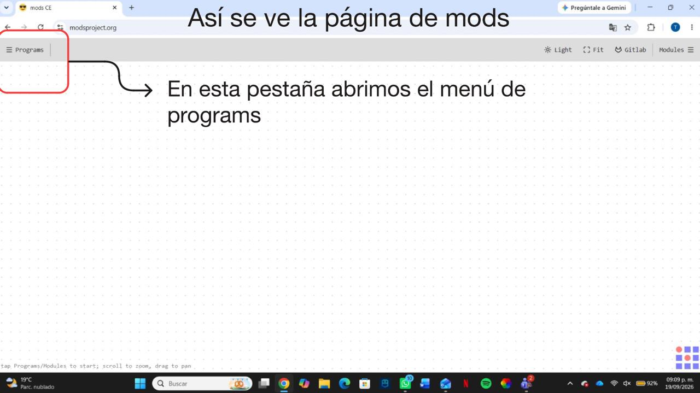
Una vez dentro de la pantalla principal, nos dirigimos a la pestaña superior izquierda para abrir la lista de configuraciones y programas disponibles en la plataforma.
Configuración
Búsqueda de SRM-20 mill
En el buscador escribimos el modelo de la máquina y elegimos la opción de fresado 2D para PCB, que es la plantilla que se adapta a nuestra fresadora Roland monoFab SRM-20.
Flujo de trabajo
Módulos de trabajo conectados
Al abrir el programa se despliega el lienzo con todos los bloques conectados en serie. En estas pestañas seleccionaremos los elementos y parámetros con los que vamos a trabajar.
Flujo de trabajo
Identificación de pestañas y bloques principales
Identificamos los módulos esenciales del flujo: desde la entrada de los archivos vectoriales (read SVG), la conversión a imagen y el cálculo del ancho de pasada, hasta la salida de coordenadas para la máquina.
Pistas
Carga del archivo de pistas (F_Cu)
En el módulo read SVG hacemos clic en "select SVG file" y cargamos el archivo vectorial correspondiente al cobre (hola mundo-F_Cu.svg) exportado desde KiCad.
Pistas
Verificación del diseño de pistas en el lienzo
Una vez cargado el archivo, confirmamos que el módulo reconozca las dimensiones exactas en milímetros y la resolución (DPI) de nuestro diseño.
Pistas
Inversión de corte en las pistas
En el módulo convert SVG image pulsamos el botón "invert". De esta manera las pistas quedan en color blanco para protegerlas, y el fondo en color negro para que sea el cobre que la máquina retirará.
Pistas
Selección de herramienta para pistas
En el bloque de parámetros elegimos la fresa adecuada para pistas (comúnmente punta de grabado en V o fresa plana), ajustando el número de pasadas para retirar el cobre sobrante.
Perforaciones
Carga del archivo de taladrado (User_1)
Para la segunda etapa cargamos el archivo vectorial correspondiente a los barrenos (hola mundo-User_1.svg), que contiene los puntos donde se harán los agujeros.
Etiquetas
Carga del archivo de serigrafía (User_2)
En la tercera etapa importamos el archivo con los textos y etiquetas de identificación (hola mundo-User_2.svg) para grabarlos sobre la placa.
Periferia
Carga del contorno exterior (Edge_Cuts)
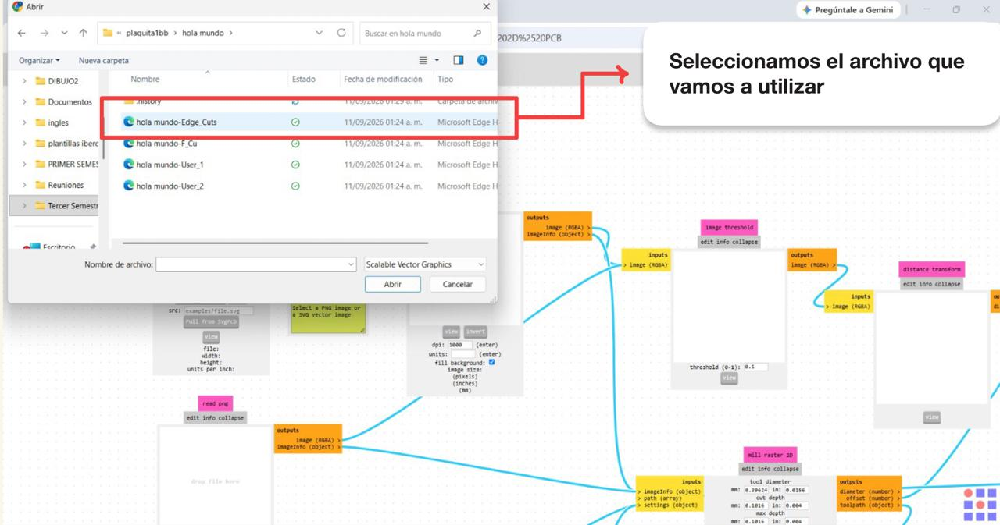
Para la última etapa cargamos el archivo SVG con el contorno exterior de la tarjeta (hola mundo-Edge_Cuts.svg) para recortar la forma final de la PCB.
MonoFab
¿Qué es la Roland MonoFab SRM-20?
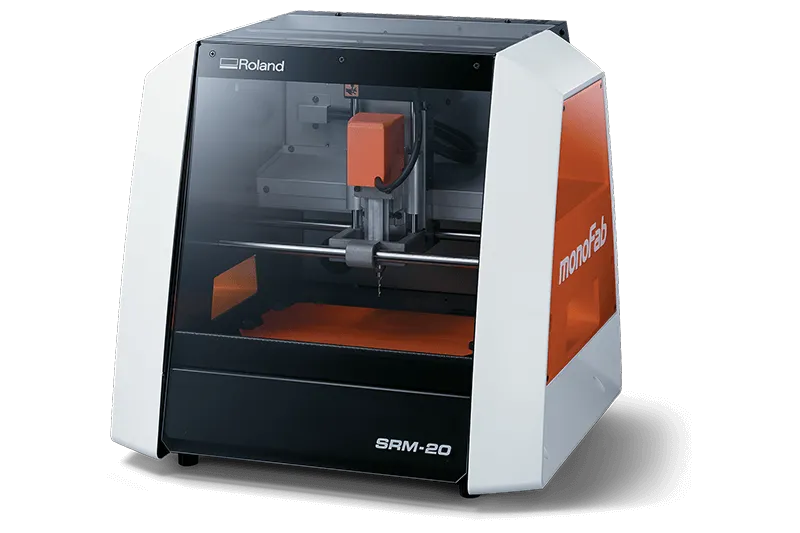
Como una fresadora pequeña, la SRM-20 ofrece un tamaño compacto y una potente funcionalidad a un precio económico. La producción de partes y prototipos realistas se hace de forma simple y conveniente con un dispositivo que se adapta a cualquier oficina, aula u hogar. Para usuarios que busquen avanzadas habilidades de fresado sin la necesidad de ser expertos, la SRM-20 es la fresadora más precisa y de más fácil operación en su clase.
¿Cómo descargar el software "Vpanel" para el uso de la MonoFab?
Para poder hacer uso de la MonoFab lo primero que tenemos es buscar e instalar el software correspondiente, el cual podemos encontrar en el buscador simplemente poniendo "Vpanel SRM-20" o algo por el estilo.
Una vez adentro de la página entraremos al apartado de software y buscaremos la parte que diga "monoFab Driver", lo cual nos abrirá un menú desplegable con lo cual tendremos que buscar el Driver que corresponda a nuestro equipo e instalarlo.
Para la instalación de nuestro material en la fresadora y posteriormente su configuración lo primero que llevamos a cabo es el uso de una "placa de sacrifición" la cual su función es evitar que la propia plataforma de la fresadora se dañe u obtenga marcas. En esta plataforma vamos a pegar nuestra placa haciendo uso de cinta de doble cara buscando que quede lo más paralelo posible para evitar errores.
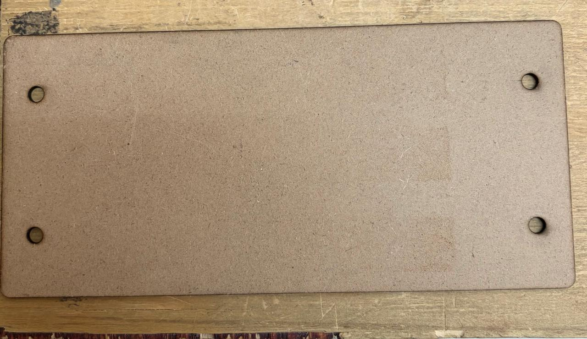
Una vez realizado esto podemos instalar nuestro material en la fresadora y ajustándolo con los tornillos que esta misma tiene.
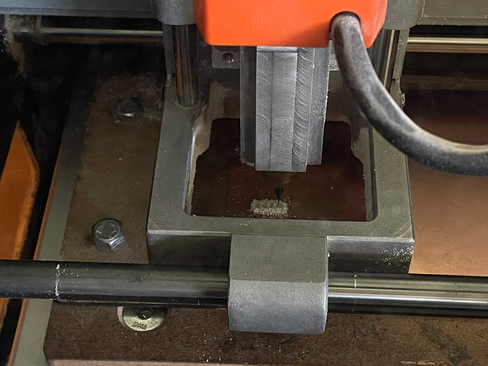
Broca
¿Cómo instalar la broca?
Para realizar la instalación de la broca tenemos que hacer uso de la llave Allen correspondiente, con la cual podremos ajustar como es debido las brocas que vamos a ocupar para cada capa.
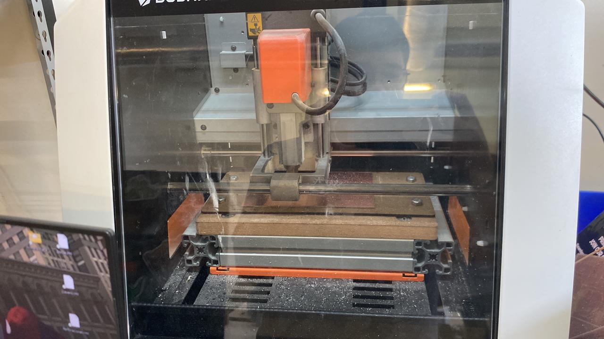
Configuración
Configuración de los orígenes
Para poder empezar a fabricar lo primero que debemos hacer es establecer los orígenes de nuestros ejes "x", "y" y "z", para hacer esto lo que buscamos es "rallar" la superficie de nuestra placa para que de esta manera la broca no entre demasiado y terminemos sin pistas. La configuración la vamos a realizar con el uso de nuestro Vpanel y de tantear hasta obtener un rayón en la superficie de nuestra placa.
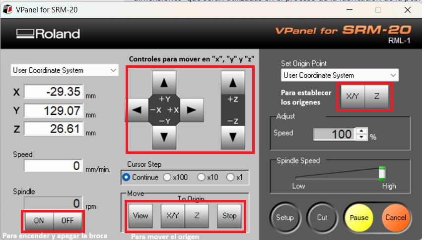
Fabricar
La fabricación
Una vez hecha toda la configuración y calibración para empezar a fabricar simplemente debemos pulsar en el botón de output para que empiece a fabricar y estar atentos por cualquier tipo de problema que pueda llegar a suceder, y limpiar una vez que terminemos para tratar de no inhalar el polvo residual que quede.
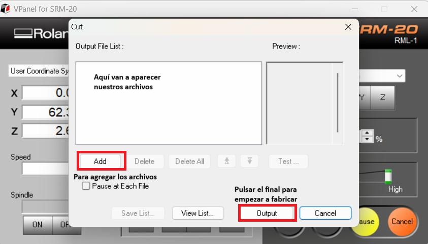
Multisim
Resumen: ¿Qué es NI Multisim?
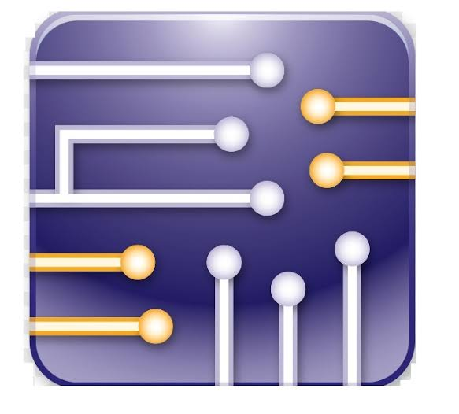
NI Multisim es un programa de simulación de circuitos basado en SPICE. Nos permite dibujar esquemáticos, probar el funcionamiento de circuitos analógicos y digitales en tiempo real y medir voltajes y corrientes antes de armar físicamente la placa.
Entorno de diseño y simulación virtualEntorno
Área de trabajo de Multisim
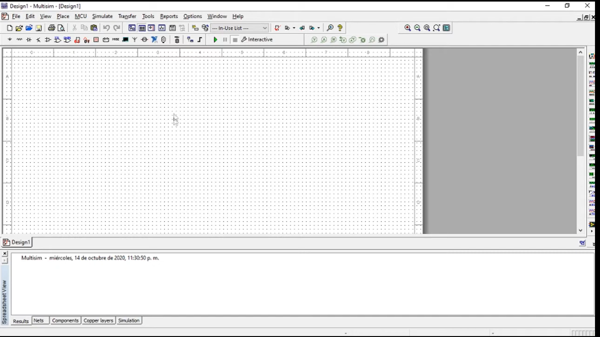
Al iniciar Multisim se abre la hoja de trabajo en blanco con su rejilla de puntos y las barras de herramientas superiores para controlar la simulación y gestionar el proyecto.
Instrumentación
Barra lateral de instrumentos virtuales
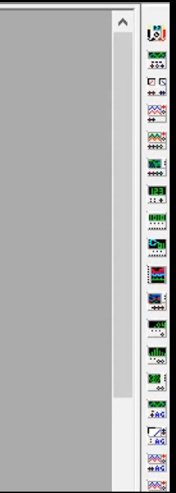
A la derecha de la pantalla tenemos la barra con todos los aparatos de laboratorio virtuales: multímetros, generadores de funciones, osciloscopios y analizadores lógicos listos para conectarse al circuito.
Medición
Medición de voltaje sobre la primera resistencia
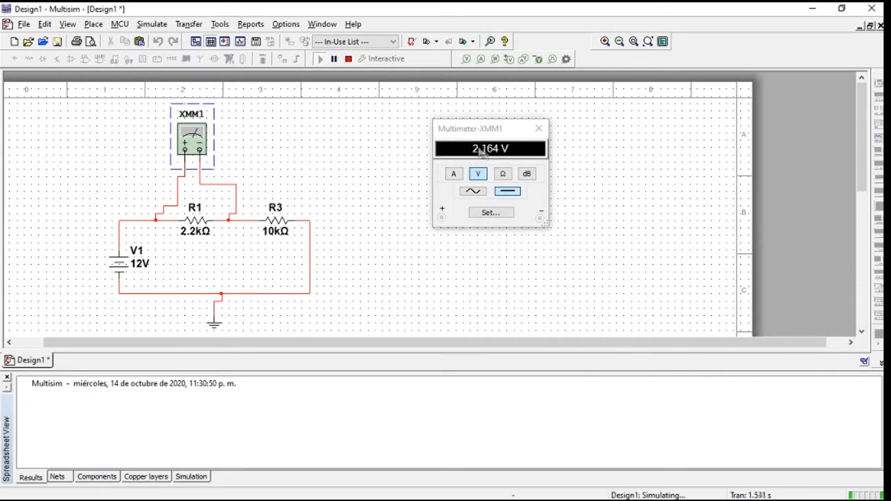
Iniciamos la simulación con el botón verde de "Run" y abrimos la carátula del multímetro: configurado en voltaje continuo (V DC), nos marca 2.164 V sobre la resistencia de 2.2 kΩ.
Conclusión
¿Por qué conviene simular en Multisim antes de fabricar la PCB?
Implementar simulaciones previas en Multisim resulta fundamental dentro del flujo de diseño electrónico para prevenir errores y costos, verificar el funcionamiento de forma segura y asegurar que la placa final sea funcional desde el primer intento.
Validación virtual previa al maquinado
Información de Contacto
Nombre: Tomás Toledo Fernández
Estudiante de: Ingeniería Mecatrónica, Ibero Puebla


.jpg)
.jpg)
.jpg)
.jpg)
.jpg)
.jpg)
.jpg)
.jpg)
.jpg)